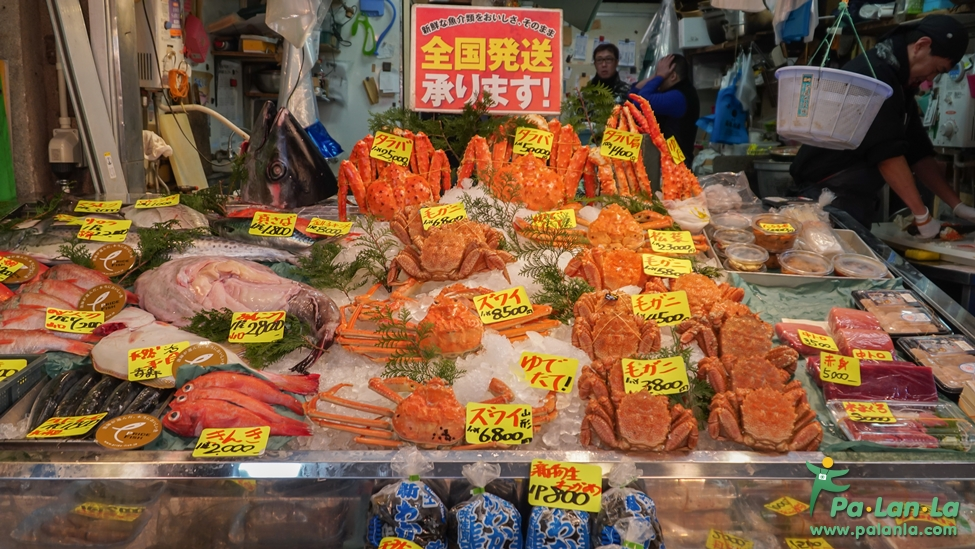

ตลาดปลาซึกิจิ
เป็นตลาดค้าส่งปลา, อาหารทะเล, ผักและผลไม้ที่มีขนาดใหญ่ที่สุดของญี่ปุ่น ตั้งอยู่ใจกลางกรุงโตเกียว รวมทั้งยังมีชื่อเสียงว่าเป็นหนึ่งในตลาดปลาที่ใหญ่ที่สุดในโลกด้วย เนื่องจากมีการซื้อขายสินค้าทะเลกว่า 2000 ตันต่อวัน
จึงเหมาะกับการมาเดินชมบรรยากาศของตลาดแบบญี่ปุ่นชิมอาหารหรือซื้อของฝากจากทะเล โดยเฉพาะซูชิทั้งหลาย นอกจากนี้ยังมีการประมูลปลาทูน่าที่เป็นอีกหนึ่งไฮไลท์ของที่นี่ด้วย